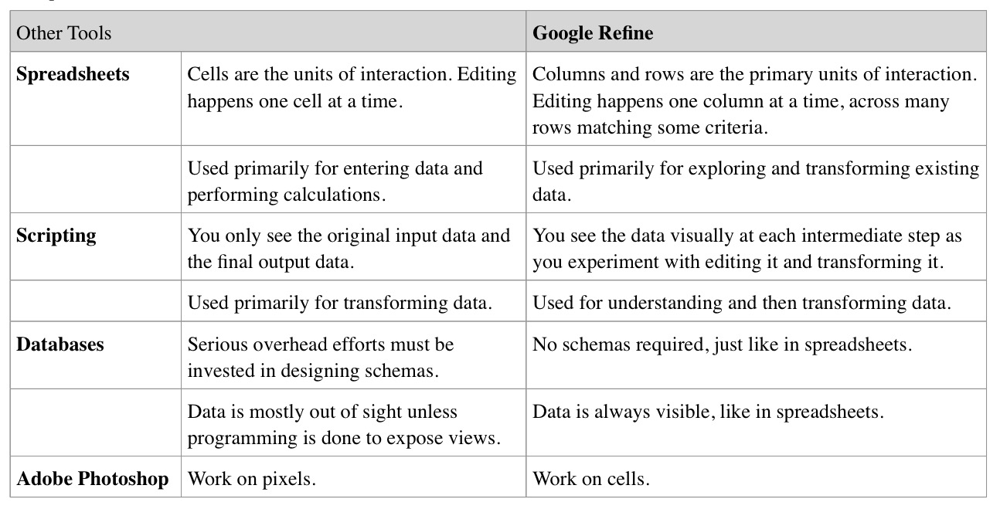

Tuesday
9-9:30: Group collaboration: What's wrong with this graph?
9:30-10: Data processing: Data workflow [A]
- The inverted pyramid of data journalism (Paul Bradshaw, Birmingham City Univ.)
- Workflow (slides)
1-2: Simple PDF scraping tools (Tabula, Docsplit, Cometdocs) [A]
2-4: Data processing: Formulae (basic math, =Sparkline, =left, =right), pivot tables, merging data sets and data formatting for different visualization methods (highcharts, Illustrator), CartoDB, etc. [L]
- Example of data workflow and different kinds of formatting
- HANDS-ON: Data downloading, data cleaning and formatting
12-1: Working lunch/lab time
11-12: Data querying lab: Open Refine [A]
- Google Refine for Investigative Journalism (Dan Nguyen, Stanford University)
- Clean data is the best weapon against the monkey insurrection (Tom Meagher, The Marshall Project)
- Google Refine Tutorial (NICAR 2012)
- Cheat Sheet: Google Refine Expression Language (Arcadia Falcone, Yale University)